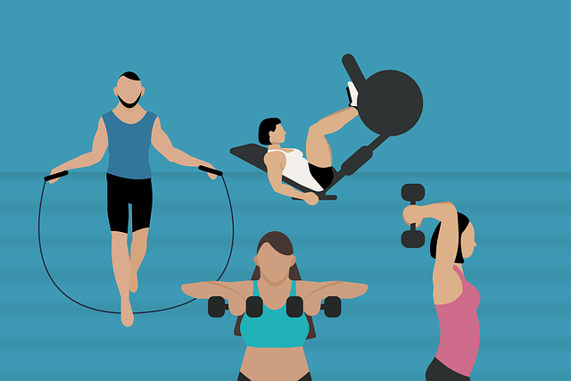
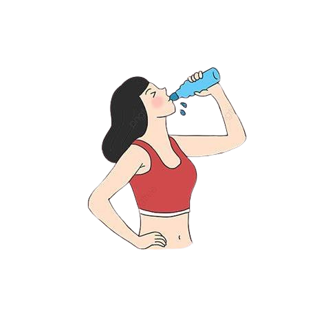

Salud
Este apartado ofrece una guía completa sobre cómo mantener y promover un estilo de vida saludable, desde la alimentación y el ejercicio hasta el manejo del estrés y la salud mental. La clave para una buena salud radica en la adopción de prácticas que benefician tanto el cuerpo como la mente, permitiendo a las personas mejorar su calidad de vida y reducir el riesgo de enfermedades.
ㅤ
ㅤ
ㅤ
ㅤ
Elementos Claves para una Vida Saludable
ㅤ
Actividad Física Regular
La actividad física es esencial para mantener el bienestar general. Se recomienda realizar al menos 150 minutos de ejercicio moderado por semana, lo cual puede incluir caminatas rápidas, ciclismo, natación y ejercicios de resistencia. Además de fortalecer el sistema cardiovascular y mejorar el estado de ánimo, el ejercicio ayuda a mantener el peso corporal y reducir el riesgo de enfermedades crónicas.
Alimentación Balanceada
ㅤ

Una alimentación saludable debe ser rica en frutas, verduras, proteínas magras y granos integrales. Estos alimentos proporcionan los nutrientes necesarios para que el cuerpo funcione correctamente. Los ácidos grasos saludables, como los del aguacate y las nueces, también son importantes para la salud del cerebro y el corazón. Se recomienda reducir el consumo de azúcares añadidos, sodio y alimentos procesados, que pueden contribuir a enfermedades a largo plazo.
ㅤ
Sueño de Calidad
Dormir entre 7 y 9 horas por noche permite que el cuerpo se recupere y se regenere. Un buen descanso mejora el rendimiento mental y físico, y la falta de sueño se asocia con un mayor riesgo de enfermedades como la obesidad, la diabetes y trastornos del estado de ánimo. Mantener una rutina regular y crear un ambiente tranquilo en el dormitorio ayuda a mejorar la calidad del sueño.

Manejo del Estrés
ㅤ
El estrés crónico afecta negativamente la salud mental y física. Las técnicas de reducción del estrés, como la meditación, el yoga y la respiración profunda, pueden ayudar a aliviar la ansiedad y mejorar el estado de ánimo. Además, mantenga un equilibrio entre el trabajo y la vida personal y dedique tiempo a actividades de disfrute personal también contribuyendo al bienestar emocional.
ㅤ
Hidratación Adecuada
La hidratación es fundamental para el funcionamiento de todos los sistemas del cuerpo, desde la regulación de la temperatura corporal hasta la eliminación de toxinas. Se recomienda beber al menos 8 vasos de agua al día, ajustando la cantidad según el nivel de actividad física y el clima.
Chequeos Médicos y Prevención
ㅤ

Los chequeos médicos regulares ayudan a detectar problemas de salud en etapas tempranas, lo que facilita su tratamiento. Se recomienda realizar exámenes de sangre, pruebas de presión arterial y visitas anuales al médico. La prevención también incluye prácticas como el uso de protector solar, la higiene personal adecuada y la vacunación.
ㅤ
Consejos para un Bienestar Integral
Hacer Conexiones Sociales :Las relaciones con amigos, familiares y colegas fortalecen la salud mental y emocional. Participar en actividades sociales y dedicar tiempo a estar con personas queridas puede reducir el estrés y mejorar el bienestar general.
Reducir el Consumo de Alcohol y Evitar el Tabaco : Limitar el consumo de alcohol y evitar el tabaco contribuye a una mejor salud cardiovascular y reduce el riesgo de cáncer y otras enfermedades graves.
Desarrollar Habilidades de Autocuidado : Practicar el autocuidado, como dedicar tiempo a actividades que proporcionen placer y relajación, mejora el bienestar emocional y promueve la autoestima.
ㅤ
Tips claves para mejorar tu salud:
- 1.Mantente activo todos los días
- 2.Come saludable
- 3.Bebe suficiente agua
- 4.Descansa bien
- 5.Evita el consumo de sustancias nocivas
- 6.Aprovecha los alimentos locales
- 7.Haz revisión médica regular
- 8.Maneja el estrés y tus emociones
La actividad física regular es esencial para mantener una buena salud, nuestro municipio cuenta con muchos lugares en donde puedes realizar actividades sencillas como caminar, andar en bicicleta o jugar deportes.
Consejos: Caminar, haz caminatas cortas de 30 minutos como mínimo o utiliza la bicicleta como medio de transporte alternativo, esto aparte de beneficiarte a ti ayudará al medio ambiente.
Una alimentación balanceada, rica en frutas, verduras, proteínas y cereales, es clave para mantener tu cuerpo funcionando de manera óptima.
Consejos: Reemplaza las comidas rápidas y azucaradas por opciones caseras como ensaladas, frutas frescas o guisos, aprovecha la abundancia de alimentos locales saludables que hay en nuestro entorno.
El agua es vital para mantener el cuerpo hidratado y funcionando correctamente. Mejora la digestión, la piel y el rendimiento físico.
Consejos: Tener siempre una botella de agua a mano te ayudará a recordar beber regularmente. Utiliza un termo para evitar utilizar botellas plásticas que contaminan y evita también desperdiciar el agua.
Dormir entre 7 y 8 horas al día es crucial para la recuperación del cuerpo y el buen funcionamiento del cerebro.
Consejos: Intenta dormir y despertarte a la misma hora cada día, incluso los fines de semana. Desconéctate de los dispositivos electrónicos al menos una hora antes de acostarte.
El alcohol, el tabaco y otras drogas afectan gravemente la salud física y mental, aumentando el riesgo de enfermedades como el cáncer y enfermedades cardíacas.
Consejos: Encuentra actividades saludables como hacer deporte o practicar un hobby para ocupar el tiempo que antes dedicabas a estas sustancias.
Consumir productos frescos y locales es una excelente manera de acceder a alimentos nutritivos a bajo costo, además de apoyar la economía local.
Consejos: Compra frutas, verduras y tubérculos frescos, como plátano, yuca y papaya, que son ricos en nutrientes y fácilmente accesibles en los mercados campesinos que hay en nuestro municipio.
Realizar chequeos médicos periódicos te ayuda a prevenir problemas de salud graves y a detectar cualquier condición antes de que empeore.
Consejos: Asegúrate de tener al menos un chequeo médico anual. Incluso si te sientes bien, es importante controlar tus niveles de azúcar, presión arterial y otros indicadores de salud.
El manejo del estrés y las emociones es esencial para el bienestar mental y físico. Estrategias como la meditación, el ejercicio y tener una vida social ayudan a mantener un equilibrio emocional.
Consejos: Dedica 5-10 minutos al día para meditar, lo que te ayudará a reducir el estrés y mejorar tu enfoque.
ㅤ
Recursos Multimedia
Artículos y Estudios Científicos
Para facilitar la comprensión y aplicación de hábitos saludables, aquí se incluyen enlaces a artículos científicos, podcasts y videos que exploran temas como el bienestar, la alimentación saludable y la salud mental. Además, se incorporan recursos de la Organización Mundial de la Salud (OMS) , ofreciendo información actualizada y confiable.
Artículos y Estudios Científicos
Estos artículos proporcionan información detallada y basada en evidencia científica sobre la salud, útil para quienes desean profundizar en temas específicos:
-Organización Mundial de la Salud (OMS) La OMS es una autoridad en materia de salud pública, y su página web contiene numerosos recursos sobre temas como nutrición, enfermedades no transmisibles y salud mental. Sus informes y guías son fundamentales para entender la salud a nivel global. ¡Si quieres visitarlos ingresa a este link! Organización Mundial de la Salud.
-Harvard Health Publishing Este sitio ofrece artículos actualizados sobre cómo mejorar el bienestar físico y mental. Exploran temas que van desde laprevención de enfermedades crónicas hasta el bienestar emocional, con información basada en investigaciones de la Universidad de Harvard. ¡Si quieres visitarlos ingresa a este link! Harvard Health.
-Mayo Clinica Estilo de vida saludableEste recurso de la reconocida clínica Mayo ofrece consejos sobre nutrición, ejercicios y otros aspectos de la vida saludable. También presenta secciones sobre salud mental, manejo del estrés y la importancia del sueño. ¡Si quieres visitarlos ingresa a este link! Mayo clinic.
-American Heart Association - Healthy LivingDedicado a la salud cardiovascular, este sitio incluye información sobre la alimentación y el ejercicio físico que benefician al corazón. También ofrece consejos sobre lagestión del estrésy cómo reducir los riesgos de enfermedades cardiovasculares. ¡Si quieres visitarlos ingresa a este link! American Heart Association .
ㅤ
Podcasts y vídeos
Los podcasts y videos permiten acceder a consejos de salud de manera entretenida y educativa. Aquí te ofrecemos algunas recomendaciones populares:
"The Model Health Show " con Shawn Stevenson : Este podcast cubre temas de salud física y bienestar emocional, con entrevistas a expertos que ofrecen consejos prácticos sobre cómo mejorar la calidad de vida.
ㅤ
"TED Health" : Este programa ofrece charlas de TED enfocadas en temas de salud, donde expertos abordan desde los últimos avances científicos hasta consejos para vivir una vida más plena.
ㅤ
"On Purpose " con Jay Shetty : Jay Shetty explora la salud mental y emocional en conversaciones con personas influyentes. Cada episodio está diseñado para ayudar a los oyentes a desarrollar una mentalidad positiva.
ㅤ
OMS - Organización Mundial de la Salud : El canal oficial de la OMS ofrece videos sobre temas clave de salud global, como la prevención de enfermedades y campañas de vacunación. Los videos incluyen recomendaciones y guías sobre cómo vivir de manera saludable y segura.
ㅤ
ㅤ
Doctor Mike : Este médico aborda temas médicos con un toque de humor, facilitando la comprensión de temas complejos y promoviendo un estilo de vida saludable. Doctor Mike habla de prevención, autocuidado y desmiente mitos sobre la salud.
ㅤ
ㅤ
AsapSCIENCE : Con una mezcla de ciencia y entretenimiento, este canal ofrece videos animados que exploran temas de salud y biología. Explican temas como los beneficios del ejercicio, los efectos del sueño y cómo la alimentación impacta el cuerpo.
ㅤ
ㅤ
Mind Over Munch : Canal que presenta recetas saludables, ideas de comidas rápidas y guías de nutrición, lo cual facilita adoptar una dieta equilibrada. El contenido está orientado a proporcionar alternativas saludables y fáciles de preparar.
ㅤ
ㅤ
Estos recursos multimedia son excelentes para quienes buscan integrar hábitos saludables en su vida cotidiana de una manera accesible y entretenida. Desde videos cortos hasta podcasts inspiradores, hay opciones para aprender en diferentes formatos según los intereses y el tiempo disponible de los usuarios.
ㅤ
En resumen, alcanzar y mantener una buena salud es un proceso que implica equilibrar varios factores clave como el ejercicio regular, una alimentación adecuada, el manejo del estrés y el descanso apropiado. Estos hábitos saludables no solo mejoran el bienestar físico, sino también el mental, contribuyendo a una vida más plena y activa. La prevención es fundamental, y realizar chequeos médicos periódicos puede ayudar a detectar problemas antes de que se conviertan en algo serio. Al adoptar estos hábitos y apoyarse en recursos confiables como los de la OMS , es posible construir una base sólida para el bienestar a largo plazo.